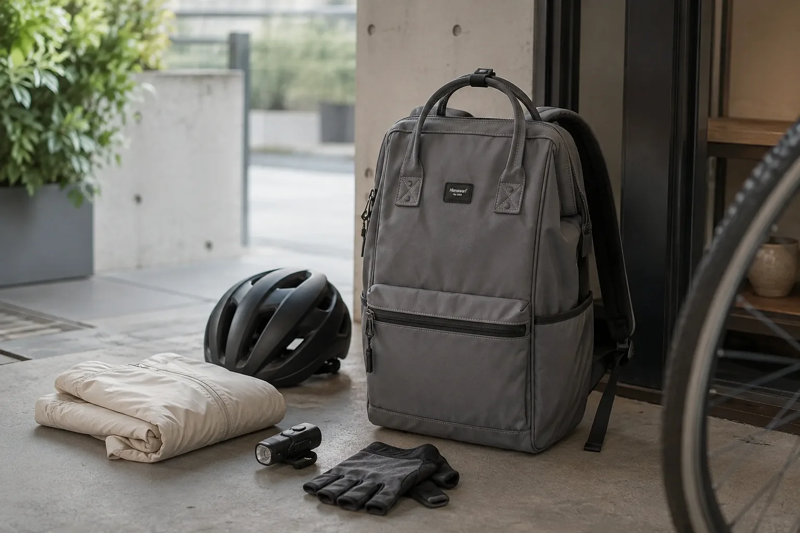

자전거 출퇴근 백팩 체크리스트: 크기·끈·수납 점검 순서

자전거 출퇴근용 백팩은 수납량만 보고 고르기보다 실제 짐을 넣었을 때 몸에서 크게 흔들리지 않는지, 늘어진 끈이 없는지, 내용물이 한쪽으로 쏠리지 않는지를 확인해야 합니다. 백팩은 헬멧이나 조명 같은 안전 장비를 대신하지 않으므로 가방 점검과 주행 준비를 따로 진행하세요.
1. 이동 거리와 실제 출근 짐부터 적으세요
노트북, 서류, 물병, 여벌 옷처럼 반드시 필요한 물건을 적고 가방에 넣습니다. 혹시 필요할 것 같은 물건을 먼저 채우면 가방이 커지고 무게가 늘기 쉽습니다. 짧은 이동이라도 업무용 기기가 있다면 단단한 물건끼리 부딪치지 않게 자리를 나눕니다.
2. 평소 짐을 넣고 착용 균형을 확인하세요
양쪽 어깨끈 길이를 맞추고 가방이 한쪽으로 기울지 않는지 살핍니다. 너무 낮게 내려오거나 몸에서 크게 떨어지면 페달을 밟을 때 움직임이 커질 수 있고, 지나치게 조이면 어깨와 움직임이 불편할 수 있습니다. 안전한 곳에서 걷고 몸을 가볍게 움직이며 자신의 체형에 맞는 지점을 찾으세요.
기본 조절 순서는 백팩 어깨끈 조절 5단계에서 자세히 볼 수 있습니다. 가방에 체스트 스트랩이 있다면 제품 안내에 맞게 사용하고, 없는 기능을 임의로 추가하거나 끈을 묶어 구조를 바꾸지는 마세요.
3. 남는 끈과 지퍼 손잡이를 정리하세요
길게 늘어진 어깨끈 끝이나 액세서리가 바퀴와 움직이는 부품 가까이 가지 않도록 정리합니다. 지퍼는 필요한 칸이 완전히 닫혔는지 확인하고, 장식이나 키링이 지나치게 흔들리지 않는지도 봅니다. 자전거와 가방 사이에 닿는 부분이 없는지 출발 전에 한 번 더 확인하세요.
4. 무거운 물건은 등에 가깝고 좌우는 비슷하게
노트북이나 책처럼 평평하고 무게가 있는 물건은 등에 가까운 칸에 세워 넣고, 작은 물건은 파우치로 모읍니다. 물병을 한쪽에 넣었다면 반대편이 지나치게 비지 않는지 확인하세요. 완벽하게 같은 무게를 맞추기보다 한쪽만 불룩하거나 단단한 물건이 등을 누르지 않도록 정돈하는 것이 중요합니다.
5. 날씨와 도착 후 보관까지 준비하세요
출발 전 강수와 기온을 확인하고, 가방에 표시되지 않은 방수 성능을 기대하지 않습니다. 비가 예상되면 제품과 크기에 맞는 별도 커버, 전자기기용 방수 파우치와 마른 수건을 준비할 수 있습니다. 젖은 가방은 도착 후 내용물을 바로 꺼내고 제품 안내에 맞춰 충분히 말리세요.
젖었을 때의 기본 순서는 비 오는 날 백팩 관리법에서 확인할 수 있습니다. 헬멧, 조명과 의류 등 자전거 안전 장비는 현재 지역 규정과 각 제품의 사용 설명을 따르세요.
출발 직전 7문장 점검표
- 오늘 꼭 필요한 짐만 담았나요?
- 양쪽 어깨끈 길이가 맞고 호흡이 편한가요?
- 가방이 몸에서 크게 흔들리지 않나요?
- 남는 끈과 장식이 안전하게 정리되었나요?
- 노트북과 단단한 물건이 서로 분리되어 있나요?
- 날씨에 맞는 별도 보호 준비를 했나요?
- 헬멧과 조명 등 안전 장비를 따로 확인했나요?
참고·안내
- Himawari 제품별 크기·착용 이미지 보기
- 백팩은 자전거 보호 장비가 아닙니다. 주행 전 현재 지역 규정과 헬멧·조명 등 각 장비의 사용 설명을 확인해 주세요.
자주 묻는 질문
일반 백팩을 자전거 출퇴근에 사용해도 되나요?
이동 거리와 짐, 가방의 크기와 착용감에 따라 다릅니다. 평소 짐을 넣고 안전한 장소에서 균형과 끈 정리를 먼저 확인하세요. 백팩은 보호 장비를 대신하지 않습니다.
자전거를 탈 때 어깨끈은 짧을수록 좋은가요?
무조건 짧게 조이면 불편할 수 있습니다. 가방이 크게 흔들리지 않으면서 호흡과 어깨 움직임을 방해하지 않는 길이를 찾아 양쪽을 맞추세요.
비가 올 때 백팩을 그대로 메도 되나요?
방수 성능은 제품마다 다르므로 확인되지 않은 기능을 기대하지 말아야 합니다. 날씨를 확인하고 필요하면 별도 커버나 방수 파우치를 준비하세요.